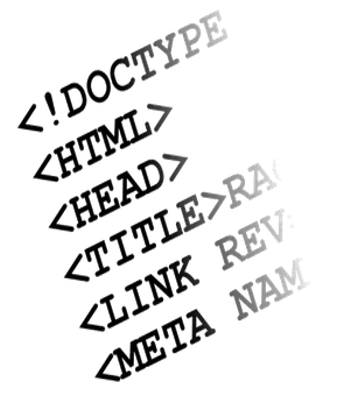

| HTML |
HTML (Hyper Text Markup Language) ვებგვერდების აგებისა და მისი სტრუქტურის შემუშავების ტექნოლოგიაა.
ტიმ ბერნერს ლიმ 1989 წელს შეიმუშავა ვებგვერდების შექმნის სტრუქტურა და საფუძველი დაუდო HTML ჰიპერტექს-ტური მარკირების ენას. ამჟამად, ტიმ ბერნერს ლი World Wide Web Consortium-ის
(W3C) ხელმძღვანელია. ეს ორგანიზაცია ვებ-ტექნოლოგიების სტანდარტების შემუშავებასა და განვითარებას უზრუნველყოფს
HTML არ არის დაპროგრამების ენა, მისი მეშვეობით ვებგვერდის სტრუქტურის აწყობა და შემუშავება ხდება.

HTML მარტივი და ასათვისებლად ადვილი ტექნოლოგიაა. HTML-ის შესასწავლად ჩვენ ერთ-ერთ პოპულარულ ტექსტურ რედაქტორს - Notepad++-ს გამოვიყენებთ.
აქვე უნდა აღინიშნოს, რომ არსებობს სხვა ვებრედაქტორებიც, მაგ., Adobe Dreamweaver, EditPlus, Sublime Text და ა.შ.HTML ენა მუდმივად იხვეწება და ივსება.
დღეს HTML-ის მე-5 ვერსიაზე მიმდინარეობს მუშაობა. HTML5 ვერსიის და-მუშავება W3C სამუშაო ჯგუფში 2007 წელს დაიწყო და ამჟამადაც დამუშავების პროცესშია.
HTML5-ში მრავალი სიახლე დაემატა, ამიტომ ზოგიერთი შე-საძლებლობა, რომლებიც წინა ვერსიებში მხოლოდ გარე პლა-გინების ან კლიენტის სკრიპტების მეშვეობით მიიღწეოდა,
ახლა ჩვეულებრივი ტეგების საშუალებით მარტივად ხორციელდება.მიუხედავად მრავალი სიახლისა, თანამედროვე ვებსაიტების აგება მხოლოდ HTML ტექნოლოგიის საშუალებით ვერ ხერხდება...
|